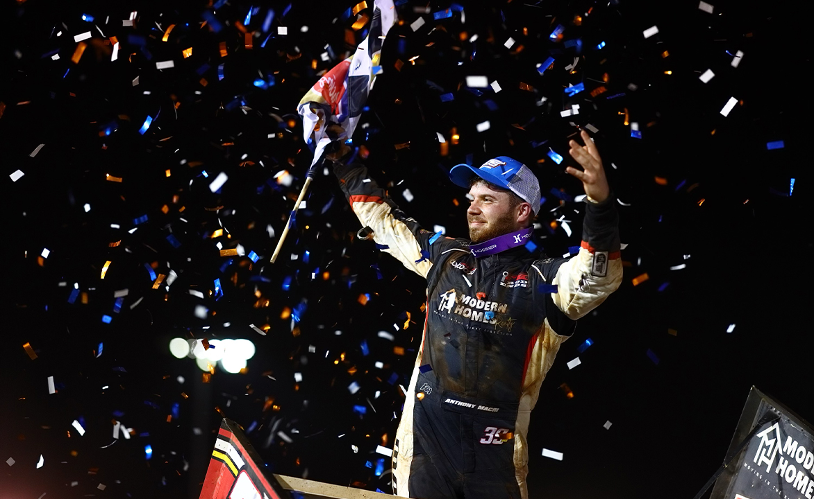

Anthony Macri Wins York Excavating Sprint Showdown at BAPS Motor Speedway
Macri started on the pole in the No. 39M and beat Chase Dietz and Ryan Smith in the 30-lap, $10,000-to-win feature at York Haven, Pa., on Saturday, Nov. 14.

Anthony Macri won the 30-lap 410 sprint car feature at the 16th annual York Excavating Sprint Showdown at BAPS Motor Speedway in York Haven, Pennsylvania, on Saturday, Nov. 14, according to official results posted by the track. Macri started on the pole in the No. 39M and finished ahead of Chase Dietz, Ryan Smith, Logan Rumsey and Dylan Norris. The race paid $10,000 to win and $600 to start, according to the BAPS event page.
Hoseheads.com’s preview of the event described the Sprint Showdown as the final 410 sprint car race of the year on the East Coast. BAPS listed 18 entries in the 410 division. Troy Wagaman Jr. finished sixth after starting 16th, the biggest gain in the field. Lance Dewease, Cameron Smith, Brock Zearfoss and Danny Dietrich completed the top 10. Cole Dewease and Buddy Schweibinz did not finish.
Qualifying ran in two groups. Dietz set the fastest time of the night at 13.835 seconds in the second group, and Macri led the first group at 14.165 seconds, according to the official results. Ryan Smith and Rumsey won the two 10-lap heat races, and every car in the 410 division transferred to the feature.
Macri passed Smith for the lead on lap 13 in turn 2 while Dietz moved into second, according to a race report published by Les Gars de Courses. That report said a caution for Brent Shearer with four laps remaining set up a single-file restart, and Macri held off Dietz the rest of the way. Hoseheads.com noted before the race that Dietz entered the weekend leading the nation in sprint car feature wins and that Dietrich was a three-time Sprint Showdown winner.